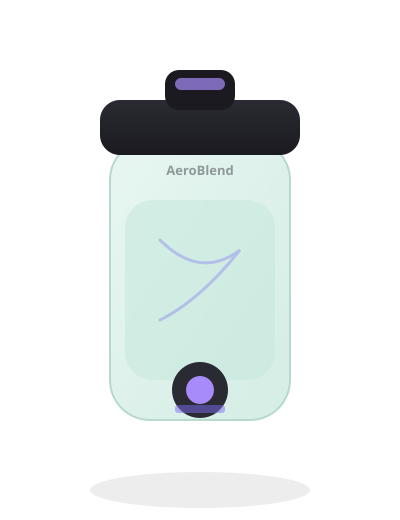

Great fit
- Dorms, offices, and small kitchens
- Protein shakes and soft-fruit smoothies
- Travel days when you pack light
- Gift shoppers looking for a compact gadget
Portable blender overview
A compact, USB-rechargeable blender cup for smoothies and protein shakes when a full countertop unit is overkill. Here’s a clear look at who it’s for, what to expect, and where to check live pricing.

AeroBlend Go is aimed at people who want a quick blend without unpacking a full kitchen setup. It’s a better fit for soft produce and powders than for heavy frozen blocks or fibrous greens in large batches.
Balanced notes based on typical portable-blender tradeoffs — not a hands-on lab review.
Top up via USB, then add liquid first and soft ingredients second so the blades can spin freely.
Secure the lid, press the blend control, and run short pulses. Pause if the motor sounds strained.
Drink from the cup, then add water and a drop of soap for a quick rinse cycle before storing.
Exact capacity, wattage, and included accessories can change by seller listing — verify on the product page before buying.
“Fits in my work bag and handles protein shakes without the countertop mess.”
“Fine for banana + berries; I still keep a full blender for frozen meal prep.”
“USB charging is the win. I top it up next to my laptop between meetings.”
Illustrative reader-style notes for template layout — replace with real quotes you have permission to use.
Text labels only — placeholder “as seen in”-style pills for layout. Swap for real mentions you can substantiate.
Current pricing and availability change often on Amazon. We don’t hard-code a dollar amount here — tap through to see the live offer.
View on Amazon
As an Amazon Associate, Kitchen Gift Notes earns from qualifying purchases.
Placeholder ASIN B000000000 — replace with a real product ASIN before publishing.